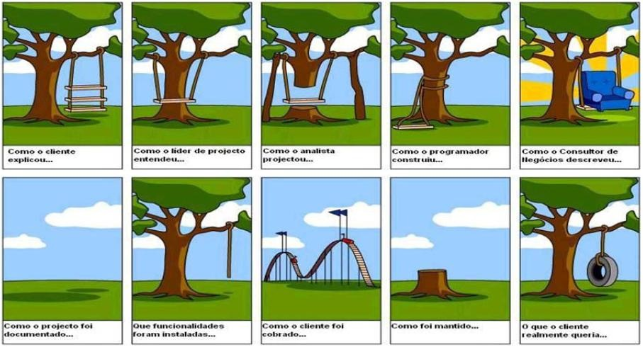
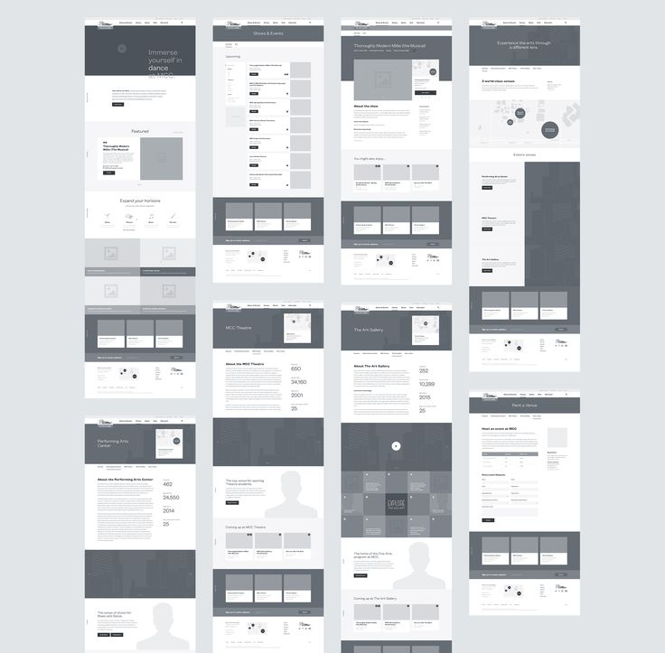
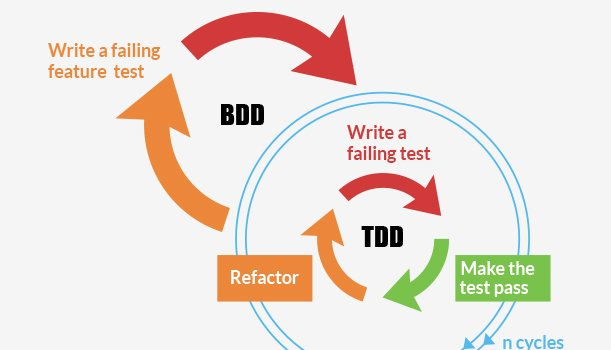

Jornada de um Projeto
Um projeto, geralmente, passa por algumas etapas durante o seu desenvolvimento:
- Concepção
- Análise de Requisitos
- Design
- Testes
- Implementação
- Implantação
- Feedback e melhorias
Vale lembrar que o processo é cíclico, logo, após a etapa de concepção, ele passa de Feedbacks e melhorias para Análise de Requisitos.

Como estamos utilizando um framework ágil que permite iterações para entregar valor ao cliente e usuário de uma forma contínua, podemos repetir esse processo para cada Sprint Backlog definido.
Concepção

Esta é a etapa inicial do projeto onde o cliente, ou um time, expõe os problemas que gostariam de resolver. Geralmente é utilizado a técnica de brainstorming, porém ela é ineficiente, por não ter um objetivo muito claro, por se parecer muito com uma reunião e representar um custo elevado para a empresa. Pode se assemelhar também a uma brincadeira, por não ter bem definido o momento que deverá acabar.
Para contornar esse problema, podemos fazer um jogo: o gamestorming. Ele consiste dos seguintes elementos:
- Tempo: o tempo precisa ser controlado do início ao fim na fala, apresentação ou posicionamento de alguém.
- Ambiente: o espaço do jogo deve fornecer toda a infraestrutura necessária para um bom jogo.
- Objetivo: os objetivos devem estar claros.
Uma das formas de se ter ideias de aplicações é pensar em soluções para problemas.
Podemos utilizar post-its para anotar as ideias e classificá-las em categorias. Após isso time vota a ideia que irá trabalhar e podemos passar para a primeira frase iterativa: a análise de requisitos.
Análise de Requisitos

Essa é a etapa em que levantamos as funcionalidades da aplicação. É importante frisar que não se deve especificar todas as funcionalidades de início. Primeiro porque é impossível prever todas as funcionalidades. Segundo que as funcionalidades mudam! Os ciclos do processo farão com que as funcionalidades já existentes mudem e que grandes erros desapareçam logo no início do projeto, além de gerar novas funcionalidades a partir das já desenvolvidas.
Logo, é recomendado que façamos apenas um Product Backlog básico, utilizando o formato de história de usuário.
VISUALIZAR CATÁLOGO
Como usuário
Quero ver o catálogo de séries categorizado
Para decidir o que vou assisir
É importante lembrar que a história de usuário é voltada para negócio, logo não faz sentido implementar a partir do ponto de vista do usuário. É preciso quebrar a história em itens técnicos, para assim os desenvolvedores conseguirem implementar.
As histórias de usuário se encaixam na categoria de requisitos funcionais, que são funcionalidades essenciais de uma aplicação. Existem outros tipos de requisitos que iremos explicar mais a frente do curso.
Design
Geralmente esta etapa se mistura com a anterior. Neste curso iremos aprender sobre Experiência de Usuário (UX). UX é basicamente uma área que envolve um conjunto de áreas (desde design de interfaces a desenvolvimento de sistemas) em prol da experiência que o usuário terá ao utilizar o produto ou serviço. Ela oferece diversas técnicas e entregáveis para nos guiar nas etapas de análise de requisitos, design e testes.
Uma das técnicas que aprenderemos é o cardsorting, que é uma técnica utilizada na área de Arquitetura da Informação para ordenar e classificar informações dentro de uma página ou seção de uma página.
Podemos expandir a história de usuário e transformá-la de fato em uma funcionalidade descrita através de passos. Por exemplo, para a funcionalidade VISUALIZAR CATÁLOGO:
VISUALIZAR CATÁLOGO
Como usuário quero ver o catálogo de séries categorizado para decidir o que vou assistir
Dado que eu esteja logado
Quando eu clicar em "Catálogo"
Então eu vou para a página de séries
E se eu clicar na categoria "Ficcção Científica" no menu de categorias
Então eu vejo as séries de "Ficção Científica"
Esse é um formato bem utilizado no BDD (Desenvolvimento Orientado a Testes), onde estabelecemos cenários e passos para a funcionalidade. Isso facilita o fluxograma de ações que fazemos nessa etapa, entre o desenvolvimento de outros entregáveis, inclusive ajuda a validar a usabilidade com testes de usabilidade.
Dois dos entregáveis que aprenderemos é o wireframe e o protótipo. O wireframe é um desenho de páginas de baixa fidelidade apenas para sabermos o que é importante. O protótipo é responsável por mostrar como será o fluxo de navegação.

Testes
Os testes vem antes da implementação por utilizarmos o TDD (desenvolvimento guiado a testes), onde estabelecemos testes unitários e de integração antes de codificarmos, o teste falha, codificamos, o teste passa, refatoramos e começamos tudo de novo. Isso garante confiabilidade e segurança da aplicação.
Já com as histórias de usuário com cenários definidas na etapa anterior, podemos utilizá-las para fazer os testes de aceitação do BDD, que é simplemente a validação dos passos descritos. É um teste muito mais semântico do que de código, como o TDD nos guia a fazer.

Implementação
Após termos a história de usuário bem definida, um fluxograma de ações, um wireframe ou protótipo da funcionalidade, juntamente com os testes unitários, de integração e de aceitação é feita a implementação da funcionalidade.
Lembremos que os sub-itens técnicos foram criados na Planning Meeting.

Implantação
A implantação é a etapa de colocar a aplicação num servidor em cloud (no nosso caso), utilizamos o Heroku, ele possui suporte à Ruby, ao framework Rails e ao sistema gerenciador de banco de dados PostgreSQL.

É desejável que deploys (essa tarefa de colocar a aplicação no servidor) seja feita regularmente após a tarefa estar pronta, ou seja: teste de aceitação + desenvolvimento + review de código + aprovação.
Feedbacks e melhorias
O cliente ou usuários dão feedbacks e levantam correções ou melhorias das funcionalidades desenvolvidas na sprint.
O processo volta para a etapa análise de requisitos.